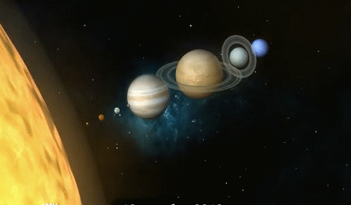
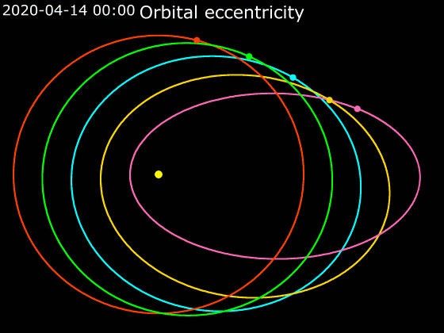

First some gifs from the internets, mostly from https://acegif.com/gifs-the-solar-system/ but then I had to find a better mars, and the images of orbital excentricity and what comes after that are from some other sites. You should know how to find image by the image by reverse image search. to inspire thought. They are mostly of the same motion system. And simply comparing them to see if they all agree or disagree on themselves I will see what is probably true (probably промямлил. т.е. неточная информация, не стопроцентно точная. может быть стопроцентно точной, но то что она точка не стопроцентно точно. (точка это точна скорей всего, на автомате писал) = this is a part of another work, and that work on language and it came to a decission to keep all the typos, and especially the random thought about anything referring to language, so don't be shocked. and don't read grey text if you are. for maybe they're a source of something interesting. And until I understood if they are random I keep on keeping them.
Here’s how photos of Pluto improved along with improved technology
pluto:
neptunus:

uranus:

Jupiter:
 (эх не ту планету jewпетром
назвали)
(эх не ту планету jewпетром
назвали)
(сверху Сатурн, снизу Церера (Saturn & Ceres)) (они говорят, что с Юпитера, а они с Сатурна)
mars:


venus:
only they say Venus rotates the other way. So whether it's some stale misconception or this image is taken from the south on top, or that is just some coloured marble playing the role of Venus, who knows.
mercury:

and some solar system gifs, the ones I went there for.
and the first one (actually it came the last) reminds me of musical notation, and I think again that musical notation-intonation was aligned to astrologic data. We would sing to communicate with the other planets? I doubt it works like this but who knows what acient knowledge have we lost. maybe those piramids positioning to Orion belt is not cherry-picking (I didn't check) we'll see if they knew after we rediscover the same technologies, to see how ancients could actually knew (double past. weird. runglish of a kind) how to sing to the priest at other planets. And so those prists would trasmit something too? Listen kid, that's weed. It's not good for you.

not only that one but all of them are not in up to scale (the planets are so small in comparison to the distances, that they would be much less than a pixel if the orbits were shown in one screen)

Here I see Spica (a star 250 light years away) and at first I thought it couldn't be right, it moves as if it is somewhere between mars and saturn. I thought it couldn't move that fast (or is there something I don't know) and I looked at it as at plane, and it seems to me it would move much slower if it was so far. It moves almost with the same speed saturn does, it cannot be real. But I think that I'm used to rotating finite disks in the static space, but here we move the space too. So I will return to this question I am rather puzzled o far.
 Naturally Jupiter is not larger than Sun, so thake
these models with a grain of salt.
Naturally Jupiter is not larger than Sun, so thake
these models with a grain of salt.




The gif above probably has planets in scale to one another. The image bellow, definitely not.
The gif above is probably the only one keeping these ratios, because mars looks a little bigger than being a half of Venus in diametre. The distances are waaaaaaaaaay bigger. and to moons too.

But that image is the only one so far, which shows planet properly rotating, (maybe because each of the градус (температурный связан с астрономическим) is one day and thus one rotation. It would be difficult to animate, but very possible, I will find slower years in gifs, or will have to make it by myself and with my friends to whom I will still have to pay some money for their work.) But hey! they rotate the other way: Their way sun would rise in the West. And Venus is indeed the only one with the one they didn't rotate at all, so they managed to make them all wrong. And it's a good thing, because I just look for reverse gif online and vois la!

Wow, does sun rotate? Naturally. I think The rotation of the sun is the main cause of our own rotation around the sun. And if we look from the north, we rotat counter-clockwise. And from our perspective it's not. I cannot visualize by this gif how could it happen that clock-wise became по-солонь (by sun) but I can visualize it without any gif: On the North sun is always at the southern half of the sky. It gets up at the East, raisese, moves to the West and falls down there. I f we look at the world with South in front of us. Face to the sun. Workers prefer sun lighting not in their eyes, but at the object they work with. Leasuring lazies prefer to face the sun. So let sun shine on you all the time. Be an actor. Actors work face to the light. Or be a worker, do the work. I will be aware of this attitutde and relation to the light among professionals. When you imagine west and east, you often look at the north in your mind, because that's how maps are made. To make the sun look in your back, to Make the Sun be on Your side. Blind your adversaries, not you.
Sometimes their scales puzzle me: they have placed so much effort into doing something beautiful only to make it misleading? The sun of the size of Earth. Why! Whatever, I will find the best one and will use it everywhere from then on.
(that uggo is also correct about ratios of mars and venus, but earth is almost as large as venus, a little bit larger than venus (both are 12 thousand kilometres in diametre: 12104 and 12742) but does it make it necessarily correct about the orbits. It is my first day learning this stuff, give me a brieak, don't trust me 100% here, I take it from open and common sources, but we saw the distances to the planets and how google mislead us (специально или нечаянно, кто разберёт и какое значение)

This final image is actually the first I found, so it is the first to talk about. I was confused by mercurie's orbit. And I googled orbits gif. And this was what came to me. I don't think it's our solar system. But everyhtin could be: mercury is light. I found the source of it:
https://en.wikipedia.org/wiki/Orbital_eccentricity but I didn't dig into it. I think those other gifs are more about our solar system. Or imagine if we could only see mercury flying across the sun and we didn't have an idea about how those planets actually go? Impossible. Звездочёты только тем и занимались, что планеты наблюдали? я понятия не имю, это галлерея.
Настоящая эксцентричность планетарных орбит показна на этой гифке:
(для наглядности планеты увеличины во много-мого раз, и даже не в масштабе по отношению к солнцу)
The End of the secret level.